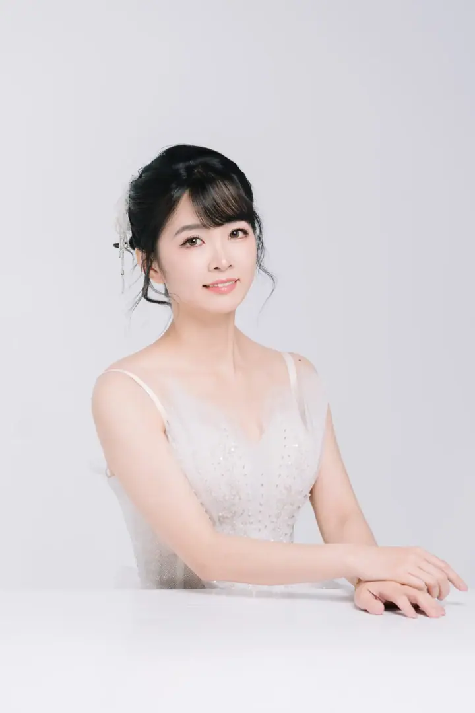

EmilyFresh & polished
A thoughtful, detail-oriented approach to personal beauty.
Senior Artist
Enquire with Emily8 photographs. Open one to keep as a reference.



The artist's eye / Emily
A softer frame.
What catches your eye? Select a detail.
Observations from the photograph. Keep a detail as a starting point for your own look.


A point of view
worth a conversation.
Like the way Emily sees beauty? Tell us your date, occasion and what caught your eye.
Start your enquiry